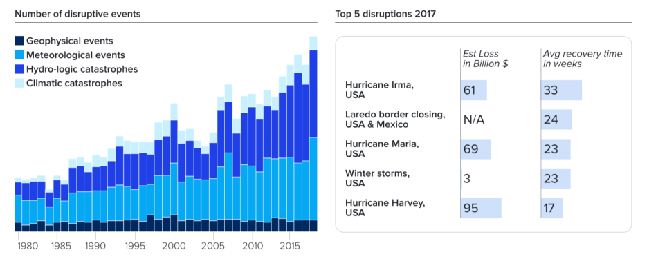
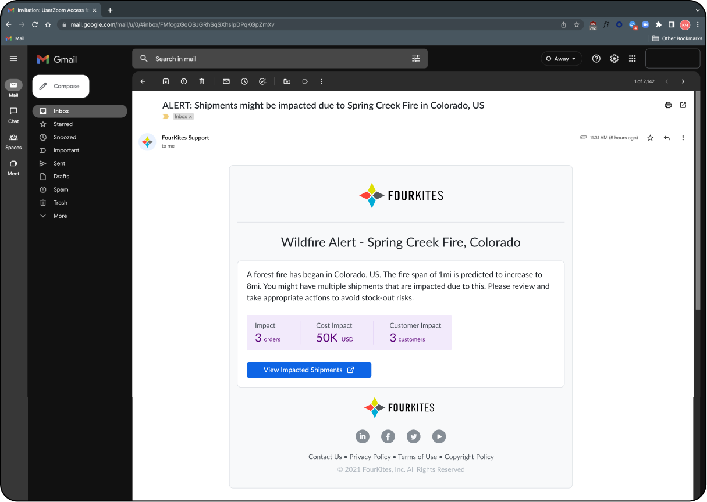

Uncovering AI Strategies for Disruption Management
How I led organizational transformation to identify and capitalize on AI opportunities, establishing new competitive advantages and revenue streams.
Director of UX · Strategic Orchestrator · Workshop Facilitator
The strategic challenge
Supply chains face growing unpredictability — natural disasters, strikes, transportation delays, and material shortages often snowball into costly disruptions. Shippers incur detention fees, operators struggle with communication silos, and executives lack visibility into cascading risks. That fragmented approach was increasing costs, straining supplier relationships, and undermining operational reliability across the board.

My role
I framed the problem beyond UX pain points, positioning disruption management as a business-critical opportunity for AI adoption. I facilitated a co-creation workshop with 20+ enterprise customers at VP level and above, aligning cross-functional leaders on shared pain points and opportunities, while directing my design team to integrate insights from Product, Data Science, and Engineering into one unified solution framework — and partnering with leadership to tie every outcome directly to business KPIs: reduction in detention costs, faster resolution times, improved NPS.
How we unlocked AI potential
User journey mapping exposed friction across the full supply chain lifecycle, from detection to downstream communication. That surfaced where AI could augment human judgment rather than replace it — for instance, prioritizing shipments by revenue, customer relationship, or inventory value instead of just time. We explored automation across three areas: risk detection and probability scoring, impact assessment and disruption alerts, and downstream communication management.

From workshop to strategic shifts
The workshop converted directly into four strategic shifts: automated risk assessment through AI-driven disruption alerts and probability modeling; priority-based recommendations that rank shipments by business value, not just time; data unification that reduced silos by integrating third-party and internal sources into one ecosystem; and a scalable notification framework that automates communication chains for faster stakeholder response.
Business impact
The workshop positioned AI not as a feature but as a strategic lever for supply chain resilience, validated directly through enterprise co-creation rather than internal assumption — which reduced adoption risk substantially. It influenced the product roadmap by tying every proposed AI intervention to a measurable business outcome: reduced detention, improved reliability, and faster time-to-resolution.